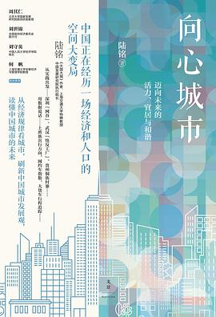

《向心城市 : 迈向未来的活力、宜居与和谐》

总体观点
人口向中心城市和特大都市圈集聚，是全球现代经济发展中不可逆转的客观经济规律；试图通过行政干预手段盲目‘控制大城市人口规模’，既违背经济学常识，又会带来巨大的效率损失与社会不公。
所谓的‘大城市病’（如拥堵、污染、高房价），本质上不是人口总量过多的问题，而是供给侧‘城市规划滞后、公共服务配置失衡、土地供应受限与职住分离’等管理治理问题。
未来的中国城市必须走向‘向心城市’：在中心城区坚持高密度、精细化发展，打破户籍制度壁垒，推动基本公共服务按照常住人口均等化配置，才能实现效率与公平的兼顾共赢。
核心观点
-
1. 人口集聚是现代服务业与知识经济增长的终极动力源泉
服务业必须面对面交互，人口密度越高，人际碰撞的知识外溢效应越强，分工越细密，创造的就业岗位与经济附加值越高。
纽约、东京、伦敦等全球超级城市以极小土地面积贡献了本国两成以上的GDP，证明人口密度是规模经济和创新活力的倍增器。 -
2. ‘大城市病’的解药不是驱赶人口，而是改善城市规划与供给侧管理
通过发展轨道交通网络、增加学校医院有效供给、推行职住平衡微更新，完全可以在容纳更多常住人口的同时大幅提升宜居度。
东京圈容纳了三千七百万庞大人口，但凭借世界上最密集高效的轨道交通网络和精准分区规划，极少发生长时间灾难性大堵车。 -
3. 打破户籍鸿沟：让流动人口真正享受平等的子女教育与社保权利
农民工和新市民为大城市繁荣付出了青春与税收，如果长期无法落户、子女无法就地高考，不仅压制消费内需，更积累深层社会风险。
许多一线城市外来务工家庭因积分门槛限制被迫将孩子送回老家留守，造成数千万留守儿童情感创伤与严重的人力资本损耗。 -
4. ‘向心’而非盲目蔓延：中心城区的高密度更新远胜偏远鬼城造城
脱离中心城区产业辐射在远郊荒地大搞‘新城开发’，往往沦为空心化的睡城与鬼城；中心城区集约化开发才能节约耕地与基建能耗。
部分三四线城市举债在远郊大修宽阔马路和豪华管委会大楼，却因为缺乏产业和人口聚集，最终沦为杂草丛生、债务累累的半拉子烂尾工程。 -
5. 小商小贩是城市生活生态的润滑剂，不可搞‘一刀切洁癖式治理’
街边早餐摊、便民修鞋铺、菜市场为城市中产提供了廉价便捷的生活服务，粗暴取缔底层低技能劳动者只会让整座城市的生活成本急剧飙升。
某特大城市曾大举清理沿街无证早点摊，导致写字楼白领清晨甚至买不到一个热包子，服务业从业者流失反过来倒逼企业用工成本大涨。 -
6. 土地指标跟着人走：打破‘给缺人地方批地、给要人地方卡地’的空间错配
建设用地指标应当跨区域根据人口实际流入流出动态调整，人口净流入的沿海大城市应大幅增加住宅用地供给以平抑高房价。
过去将大量用地指标硬性拨给人口持续流出的中西部小县城导致库存积压，而人口蜂拥而入的一线城市土地指标卡死导致房价暴涨。
全书思维导图 · 知识脉络树
全书结构
-
第一章 向心城市：就业、居住与通勤
基于手机信令大数据与全球城市对比，揭示现代服务业与创新经济驱动下人口向大城市乃至市中心高密度集聚的必然客观规律，打破‘城市病源于人口过多’的陈旧成见。
1.1 为什么城市和市中心人口密度高？1.2 大数据看城市；1.3 向心城市；展现全球顶尖创新要素向市中心CBD与轨道交通枢纽高度集聚的真实图景。 -
第二章 空间均衡：活力、宜居与和谐
深入阐释区域经济学‘在集聚中走向平衡’的核心命题：论证人口自由流动与用脚投票是缩小地区间人均收入差距的最有效机制，活力、宜居与和谐并非对立。
2.1 向心城市表现；2.2 用脚投票：理解发展与平衡的关系；2.3 活力、宜居与和谐：可否兼得？通过长三角与粤港澳案例展示空间集聚下的经济效率。 -
第三章 城市活力：密度、创新与消费
深入剖析高密度城市的多重红利：人与人的面对面交流是产生颠覆性创新的母体，庞大的市场规模效应能极大降低共享基建设施成本，催生出琳琅满目的消费新业态。
以上海和深圳的咖啡馆、文创园区与脱口秀剧场密度为例，阐明为何唯有高密度都市圈才能孕育出如此繁荣多元的长尾服务业与青年文化。 -
第四章 城市宜居：舒适、服务与治理
直面拥堵、房价与环境等城市治理难题：指出所谓的‘大城市病’本质上是供给不足与规划失误（如职住分离严重、轨道交通覆盖率不足），应通过技术治理与规划优化化解。
对比东京都市圈的超高密度与极高通勤效率，证明通过高密度轨道交通网与多中心微循环，大城市完全可以兼顾宜居与舒适。 -
第五章 城市和谐：包容、市民化与共同富裕
发出强有力的人文关怀倡议：消除针对外来农民工和新市民在户籍、住房、子女教育与医疗保障上的制度性门槛，让每一个在城市打拼的普通人平等分享发展成果。
测算放宽新市民落户限制对释放全社会消费潜力与稳定劳动力供给的巨大正向效应，力证包容与公平才是城市持久活力的真正源泉。